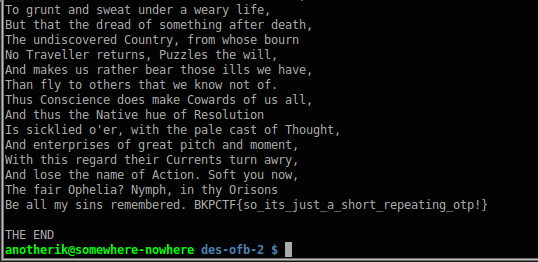

DES OFB (Crypto) | Boston Key Party CTF 2016 - Writeup
Posted on March 4, 2016Problem
Decrypt the message, find the flag, and then marvel at how broken everything is. File
Solution
Inside the tar file we found two files: a ciphertext and a small python program, des-ofb.py:
from Crypto.Cipher import DES
f = open('key.txt', 'r')
key_hex = f.readline()[:-1] # discard newline
f.close()
KEY = key_hex.decode("hex")
IV = '13245678'
a = DES.new(KEY, DES.MODE_OFB, IV)
f = open('plaintext', 'r')
plaintext = f.read()
f.close()
ciphertext = a.encrypt(plaintext)
f = open('ciphertext', 'w')
f.write(ciphertext)
f.close()
The objective was pretty simple, decrypt the ciphertext with a few tweaks in this simple code. As we can see this was the code to create the ciphertext and the only thing that was missing to revert the state (decrypt) was the key they used.
The first thing I tried was to look for more information about DES and to know about the keys. Looking for DES in Wikipedia I found it under the section Minor cryptanalytic properties:
"DES also has four so-called weak keys.
There are also six pairs of semi-weak keys."
Following the weak keys link, we found that:
"The block cipher DES has a few specific keys termed "weak keys" and "semi-weak keys". These are keys that cause the encryption mode of DES to act identically to the decryption mode of DES (albeit potentially that of a different key)."
And also some examples of weak keys. Now all we need to do is re-arrange the code and use the keys we found.
from Crypto.Cipher import DES
import re
f = open('weak_keys.txt','r')
while 1:
key_hex = f.readline()[:-1].strip()
if key_hex == 'end':
break
KEY = key_hex.decode('hex')
IV = '13245678'
a = DES.new(KEY, DES.MODE_OFB, IV)
f2 = open('ciphertext','r')
ciphertext = f2.read()
f2.close()
plaintext = a.decrypt(ciphertext)
# Flags are of type BKPCTF, so if we find that string we break the loop
if re.search(r'\bBKPCTF\b',plaintext):
print plaintext
break
print "THE END"
f.close()
Running this piece of code will produce the flag for the exercise:
Final note: This exercise could also be done taking into account that DES OFB can be decrypted using the IV and the ciphertext. Once we know the IV (from the code they gave us) and the ciphertext, we could perform an XOR between the IV and ciphertext to get the plaintext. CBC in Wikipedia:
"For OFB and CTR, reusing an IV completely destroys security. This can be seen because both modes effectively create a bitstream that is XORed with the plaintext, and this bitstream is dependent on the password and IV only. Reusing a bitstream destroys security."